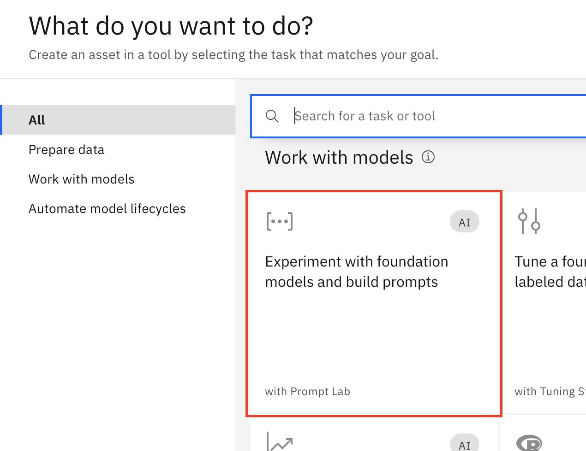

Prompt engineering exercises
Connect to the environment
-
Click on this link to access the watsonx platform.
-
Onces the watsonx console is opened, make sure to select the IBM Cloud account where you were invited, and the correct location (Dallas).

Create a watsonx.ai project
-
From the watsonx.ai console (Home window), click + to the right of Projects to create a new project.
-
Name the new project as <Your Initials> Prompt Workshop (where <Your Initials> is your name initials [i.e. John Smith would be JS]). Make sure the storage service is automatically selected. Then, click Create.
-
Next, you will link the Watson Machine Learning service to this watsonx project. To do this, move to the Manage window of the project. Select Services & Integrations and click Associate service +.
-
On the next screen, select the Watson Machine Learning instance that is provided in this account.
Create a new Prompt session
-
From the Assets tab, click New asset +.
-
Select the Prompt lab option.

-
By default, the chat interface is shown. In this case, we want to do prompt engineering, so go to the Structured tab.
-
Take a moment to get familiar with the User Interface. Some of the key options are shown in the image below.
Prompt Challenge overview
You have to create prompts to cover the following use cases using watsonx.ai.
Remember to test different models for each exercise to find which works best in each case.
Tip
Sample solutions can be found in the section Lab 1 Answers
Exercises
| Exercise | Description |
|---|---|
| 0. Zero-shot generation | Generate a marketing message with 5 sentences |
| 1. Generate sentences | Write three sentences about birds |
| 2. Working with JSON | Generate a JSON file |
| 3. Summarize | Summarize a short story |
| 4. Work with code | Translate from C++ to C |
0. Zero-shot generation
Goal
Generate a marketing message with 5 sentences.
Instruction
Genere un mensaje de marketing de 5 frases para una empresa con las características dadas.
Details that should be included
- Empresa: Golden Bank
- La oferta incluye: sin comisiones, tipo de interés del 2%, sin saldo mínimo
- Tono: Informativo
- Respuesta solicitada: Haga clic en el enlace
- Fecha de finalización: 15 de julio
See Sample answer for a possible solution.
1. Generate
Goal
Write three sentences about birds
Example 1
3 frases sobre cachorros:
- El cachorro giraba en círculos intentando atrapar su cola, pero acababa dando tumbos una y otra vez.
- Sus dueños se rieron a carcajadas, e incluso los demás cachorros del parque se pararon a contemplar la tontería.
- En cuanto los dos cachorros se encontraron en el parque, empezaron a mover la cola y a dar saltitos de alegría.
Example 2
3 frases sobre gatitos:
- La pequeña gatita sorbió la leche con su pequeña lengua rosada, haciendo un simpático sonido de sorbo.
- La gatita mordisqueó la golosina, saboreando cada bocado de su delicioso sabor.
- Nada más abrir el paquete, los ojos de la gatita se iluminaron de emoción.
See Sample answer for a possible solution.
2. Working with JSON
Goal
Generate a JSON file
Details to be included
- Nombre: Joe
- Edad: 25
- Teléfono: 416-1234-567
- Teléfono: 547-4034-240
- Dirección:
- Ciudad: Markham
- Calle: Warden Avenue
- Código Postal: L6G 1C7
See Sample answer for a possible solution.
3. Summarize
Goal
Summarize one of these short stories
Short story 1
Un pajarillo piaba mientras recogía ramitas y trocitos de musgo en su pico, revoloteando de un lado a otro entre los árboles. entre los árboles. Con cada viaje, su nido tomaba forma, haciéndose más acogedor y tentador. Y muy pronto había creado un hogar acogedor para criar a sus polluelos.
Short story 2
Nada más abrir el paquete, los ojos de la gatita se iluminaron de emoción. Se abalanzó se abalanzó sobre el nuevo juguete y lo paseó por la habitación con alegría. Con un ronroneo de satisfacción se acurrucó con su juguete, agradecida por el amor y la atención de su cariñosa dueña.
Short story 3
El barco se agitaba en el mar embravecido por la tormenta. Olas tan altas como montañas chocaban contra el casco, amenazando con hacer zozobrar el navío.
Pero el capitán y la tripulación se mantuvieron firmes, surcando las traicioneras aguas con destreza y determinación, hasta que finalmente la tormenta amainó y el barco emergió triunfante. tormenta amainó y el barco emergió triunfante, maltrecho pero intacto.
Short story 4
En cuanto los dos perros se encontraron en el parque, sus colas empezaron a moverse y a saltar el uno alrededor del otro con alegría. Sus dueños entablaron conversación y pronto se dieron cuenta de que tenían mucho en común, pues compartían su amor por los perros y el aire libre.
Al final del día se habían forjado nuevas amistades, y tanto los perros como sus dueños salieron del parque con el corazón contento y la cola meneando.
See Sample answer for a possible solution.
4. Code
Goal
Translate code from C++ to C
Tip
Use the copy button in the upper right corner of the code box to copy all the code at once.
Code in C++
// Your C++ Hello World
#include <iostream>
int main() {
std::cout << "Hello World!";
return 0;
}
See Sample answer for a possible solution.
The End
You have reached the end of this lab.